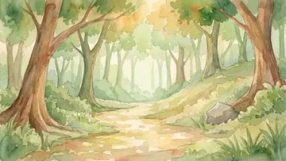

Nature Seed Gambar jalurnya. Pertemukan mereka.
Puzzle fisika gratis dengan cara menggambar garis, bisa dimainkan di browser Anda. Gambar garis dengan tinta terbatas, lalu garis itu menjadi lereng, jembatan, atau penangkap yang membawa Water Drop ke Seed. Setiap level yang selesai memulihkan satu pemandangan hutan cat air.
Dirilis pada 18 September 2026 dengan 100 level, bintang efisiensi garis, dan progres tersimpan. Gratis di itch.io, Game Jolt, dan indiexpo; versi iOS dan Android menjadi target dan belum ada di toko aplikasi.
Gambargambar dengan tinta terbatas
Hubungkanbawa Water Drop ke Seed
Mekarhidupkan kembali hutan
Di dalam build saat ini
Apa yang Anda gambar menjadi bagian dari level.
Setiap goresan yang Anda tetapkan menjadi benda padat dengan tumbukan nyata, dan Water Drop serta Seed bereaksi terhadapnya. Tinta dan jumlah garis sama-sama terbatas, jadi bentuk garis itu penting.
Status rilis Dirilis 18 September 2026

Ikhtisar permainan
Puzzle gambar santai tentang mempertemukan dua karakter kecil.
Gagasan
Gambar jalur, pertemukan Water Drop dan Seed, lalu saksikan sketsa yang tenang itu hidup kembali.
Jalankan build
100 level yang bisa dimainkan dengan gambar sentuh, bintang untuk efisiensi garis, dan progres yang tersimpan di antara sesi.
Audiens
Pemain yang menyukai puzzle yang tenang, fisika ringan, tema alam, dan sesi ponsel yang tidak menegangkan.
Status
Dirilis pada 18 September 2026 dan gratis dimainkan di browser Anda. Versi ponsel menjadi target; belum ada di toko aplikasi.
Fitur
Yang Anda lakukan di Nature Seed.
Jalur fisik yang digambar untuk memecahkan puzzle
Setiap puzzle dimulai dengan medan, Seed, dan Water Drop. Goresan pemain menjadi lereng, jembatan, atau penangkap yang menghubungkan keduanya.
Umpan balik fisika yang jelas
Water Drop dan Seed bergerak dengan cara yang bisa Anda ikuti, jadi percobaan yang gagal menunjukkan apa yang perlu diubah.
Hadiah restorasi hutan
Selesaikan satu level dan pemandangan sketsa itu terisi warna serta pohon-pohon yang tumbuh.
Level singkat, menggambar dengan sentuhan
Level-nya singkat dan Anda menggambar dengan sentuhan, cocok untuk sesi cepat di ponsel.
Putaran permainan
Cara bermain Nature Seed
- Langkah 01Baca sketsanya
Cari lereng, celah, dan penghalang, serta cara paling aman untuk menghubungkan kedua karakter.
- Langkah 02Gambar garisnya
Gambar garis Anda. Goresan itu menjadi lereng, pemandu, atau penangkap bagi para karakter.
- Langkah 03Tetapkan lalu amati
Tetapkan garisnya dan lihat karakter bereaksi. Anda bisa melihat apa yang berhasil dan apa yang tidak.
- Langkah 04Mekar atau perbaiki
Jika Water Drop sampai ke Seed, hutan pun kembali. Jika meleset, gambar ulang dengan apa yang baru Anda pelajari.
Cerita / dunia
Hutan sketsa menunggu air.
Nature Seed bermula sebagai puzzle fisika menggambar garis tentang memulihkan sesuatu yang rapuh, bukan sekadar mendorong benda agar bertemu.
Para tokohnya adalah Seed, Water Drop, dan hutan yang kembali dari sketsa menjadi berwarna selama Anda bermain. Setiap puzzle adalah tugas kecil: pelajari medan, gambar jalur, dan bantu air mencapai sesuatu yang bisa tumbuh.
- Arah desain
- Fisika yang tenang dan restorasi yang terlihat
- Karakter
- Water Drop dan Seed
- Interaksi
- Menggambar dengan sentuhan
- Hadiah penguasaan
- Penyelesaian satu baris menghasilkan tiga bintang
Sekilas
Gratis di browser sekarang, dengan ponsel sebagai target.
Anda mendapat tinta dan jumlah garis yang terbatas. Gunakan untuk membawa Water Drop ke Seed, lalu ulangi level dan ringkas penyelesaian menjadi satu garis demi tiga bintang.
- Genre
- Puzzle fisika menggambar garis
- Target platform
- iOS / Android
- Bentuk sesi
- Level singkat yang tenang
Unduh aset
Nature Seed aset pers dan pencipta
Pratinjau WebP untuk liputan pers, tinjauan penerbit, dan referensi halaman toko. File sumber beresolusi penuh tersedia atas permintaan.
Merek dan karakter
 Water DropKarakter biru yang harus mencapai Seed.
Water DropKarakter biru yang harus mencapai Seed.
 Karakter SeedKarakter hijau yang berusaha dicapai Water Drop.
Karakter SeedKarakter hijau yang berusaha dicapai Water Drop.
 Pertumbuhan pohonPohon yang tumbuh setelah diselesaikan.
Pertumbuhan pohonPohon yang tumbuh setelah diselesaikan.
 Menu hutanLatar belakang menu utama.
Menu hutanLatar belakang menu utama.
 Latar belakang permainanLatar belakang level dengan area bermain yang kosong.
Latar belakang permainanLatar belakang level dengan area bermain yang kosong.
Level sketsa menggambar garis
 Level sketsa 01Sketsa sebelum diselesaikan.
Level sketsa 01Sketsa sebelum diselesaikan.
 Level sketsa 02Sketsa sebelum diselesaikan.
Level sketsa 02Sketsa sebelum diselesaikan.
 Level sketsa 03Sketsa sebelum diselesaikan.
Level sketsa 03Sketsa sebelum diselesaikan.
 Level sketsa 04Sketsa sebelum diselesaikan.
Level sketsa 04Sketsa sebelum diselesaikan.
 Level sketsa 05Sketsa sebelum diselesaikan.
Level sketsa 05Sketsa sebelum diselesaikan.
 Level sketsa 06Sketsa sebelum diselesaikan.
Level sketsa 06Sketsa sebelum diselesaikan.
 Level sketsa 07Sketsa sebelum diselesaikan.
Level sketsa 07Sketsa sebelum diselesaikan.
 Level sketsa 08Sketsa sebelum diselesaikan.
Level sketsa 08Sketsa sebelum diselesaikan.
 Level sketsa 09Sketsa sebelum diselesaikan.
Level sketsa 09Sketsa sebelum diselesaikan.
 Level sketsa 10Sketsa sebelum diselesaikan.
Level sketsa 10Sketsa sebelum diselesaikan.
Adegan teka-teki yang dipulihkan
 Level 01 dipulihkanDipulihkan setelah diselesaikan.
Level 01 dipulihkanDipulihkan setelah diselesaikan.


Level 02 dipulihkanDipulihkan setelah diselesaikan. Level 03 dipulihkanDipulihkan setelah diselesaikan.
Level 03 dipulihkanDipulihkan setelah diselesaikan.
 Level 04 dipulihkanDipulihkan setelah diselesaikan.
Level 04 dipulihkanDipulihkan setelah diselesaikan.
 Level 05 dipulihkanDipulihkan setelah diselesaikan.
Level 05 dipulihkanDipulihkan setelah diselesaikan.
 Level 06 dipulihkanDipulihkan setelah diselesaikan.
Level 06 dipulihkanDipulihkan setelah diselesaikan.
 Level 07 dipulihkanDipulihkan setelah diselesaikan.
Level 07 dipulihkanDipulihkan setelah diselesaikan.
 Level 08 dipulihkanDipulihkan setelah diselesaikan.
Level 08 dipulihkanDipulihkan setelah diselesaikan.
 Level 09 dipulihkanDipulihkan setelah diselesaikan.
Level 09 dipulihkanDipulihkan setelah diselesaikan.
 Level 10 dipulihkanDipulihkan setelah diselesaikan.
Level 10 dipulihkanDipulihkan setelah diselesaikan.
Linimasa pengembangan
Linimasa pengembangan Nature Seed
- Musim panas 2025Konsep asli
Nature Seed bermula dari ide puzzle ponsel yang tenang tentang keterhubungan dan memulihkan alam.
- Oktober 2025Identitas Seed dan Water Drop
Kami menyelesaikan dokumen desain dan menetapkan Seed dan Water Drop sebagai karakter utama.
- Desember 2025Pembangunan dimulai
Kami merencanakan level-level pertama di atas kertas, lalu mulai membangun, dan sistem inti pun bisa dimainkan.
- Februari 2026Putaran besar level draf
Satu putaran besar yang masih kasar pada semua level memberi kami dasar untuk penyempurnaan dan penyeimbangan berikutnya.
- Maret-April 2026Mekanika dan tinjauan level
Kami meninjau mekanik tambahan dan level draf, lalu menyederhanakan atau mengerjakannya ulang agar game tetap tenang.
- Juli 2026Putaran prototipe vertikal
Build Juli menyatukan menggambar dengan tinta terbatas, bintang efisiensi, progres tersimpan, dan pembuatan garis yang stabil ke dalam satu putaran yang bisa dimainkan.
- 18 September 2026Rilis Nature Seed
Game ini dirilis sebagai Nature Seed dengan 100 level, bintang efisiensi garis, progres tersimpan, dan adegan pemulihan cat air.
FAQ Nature Seed
Pertanyaan umum tentang Nature Seed
Apakah Nature Seed gratis?
Ya. Anda bisa memainkannya gratis di browser lewat itch.io, Game Jolt, dan indiexpo.
Apakah Nature Seed sudah rilis?
Ya. Game ini dirilis pada 18 September 2026 dengan 100 level. Versi iOS dan Android menjadi platform target dan belum ada di toko aplikasi.
Game jenis apa Nature Seed itu?
Puzzle fisika menggambar garis yang santai. Garis yang Anda gambar menjadi benda padat yang membantu Water Drop dan Seed bertemu.
Bagaimana cara bermain Nature Seed?
Baca medannya, gambar rute dengan tinta terbatas, lalu saksikan kedua karakter bereaksi. Jika meleset, gambar ulang. Semakin sedikit garis, semakin banyak bintang, dan satu garis mendapat tiga.
Siapa yang membuat Nature Seed?
WillowinWorlds, studio independen yang membuat game puzzle dan arcade untuk ponsel.
Bolehkah saya memakai aset pers Nature Seed?
Boleh, untuk pers, tinjauan penerbit, dan referensi toko. File sumber tetap privat kecuali Anda memintanya kepada kami.
Devlog Nature Seed
Apa yang berubah dan kapan
- Rilis Nature Seed
Nature Seed diluncurkan dengan judul akhirnya sebagai game browser gratis di itch.io, Game Jolt, dan indiexpo, dengan 100 level, bintang efisiensi garis, dan progres tersimpan.
- Lulus restorasi dan stabilitas level 2
Level 2 sekarang menggunakan pasangan latar belakang produksinya, dengan pengaturan level yang lebih andal, pemeriksaan tabrakan, dan umpan balik penyelesaian.
- Juli 2026Build yang dapat dimainkan
Build Juli menggabungkan menggambar garis dengan tinta terbatas, bintang efisiensi, progres tersimpan, dan umpan balik pemulihan.
- April 2026Putaran pengerjaan ulang level
Setelah tinjauan internal, kami mengerjakan ulang beberapa level draf untuk mengurangi kerumitan dan membuatnya lebih mudah dibaca di ponsel.
- Maret 2026Tinjauan mekanik
Kami menguji mekanik tambahan dan membuang yang membuat level terasa penuh sesak.
- Februari 2026Putaran besar level draf
Satu putaran besar yang masih kasar pada semua level menjadi dasar untuk penyempurnaan dan penyeimbangan berikutnya.
- Desember 2025Pembangunan dimulai
Sistem inti berpindah dari dokumen desain menjadi bentuk yang bisa dimainkan.
- Musim panas 2025Konsep asli
Versi pertama Nature Seed adalah ide puzzle yang tenang tentang keterhubungan dan memulihkan alam.